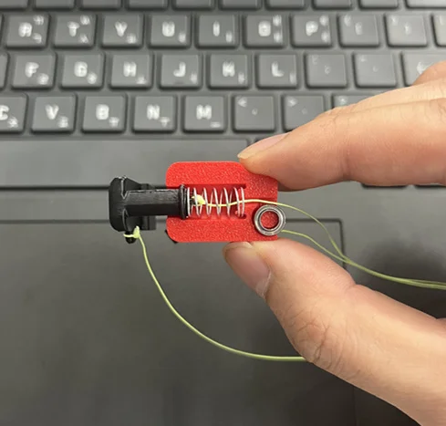
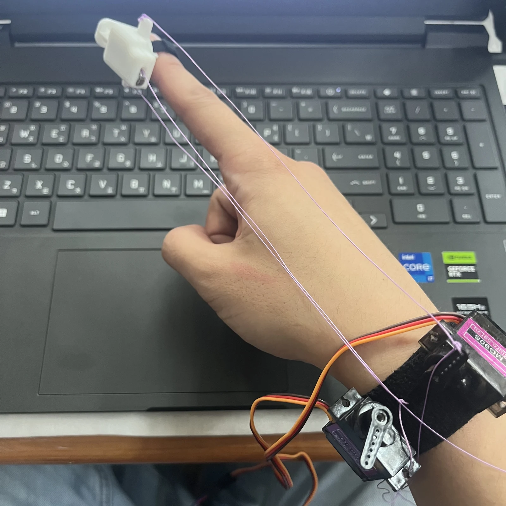
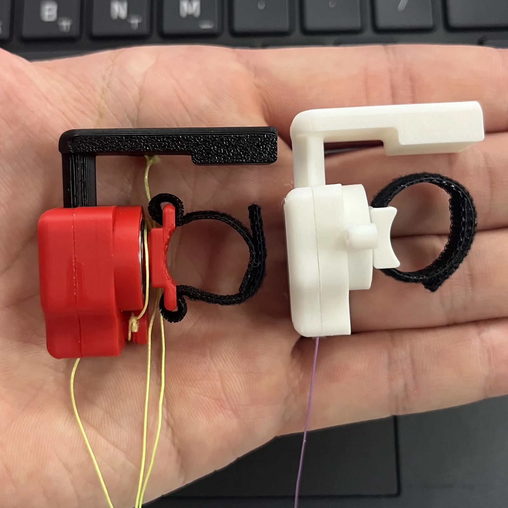
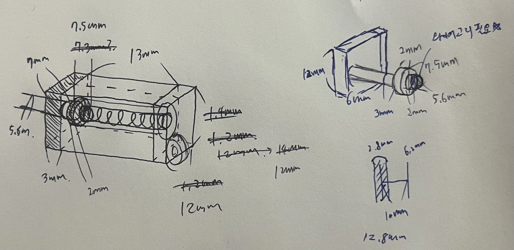
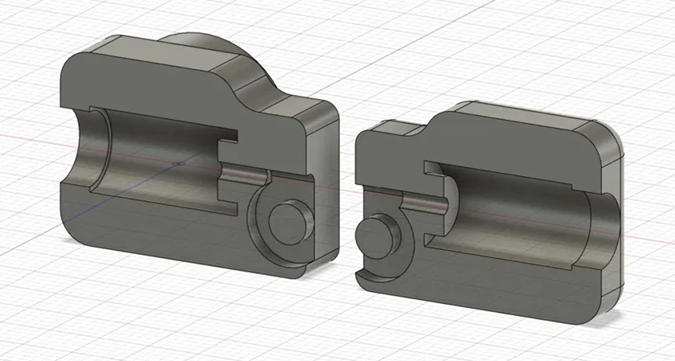

01Initial assembly
The first printed mechanism (red) established the mount, lever, spring and tendon arrangement.
March–June 2026
A fingertip pad that rotates and pulls toward the finger in response to a virtual Jenga scene.


In the Carrot Mart project, physical gestures changed how the game was controlled, but its response remained largely visual. PGI extended that work to the feedback side of the interaction: can a single lightweight fingertip device convey contact resistance that vision alone cannot?
Similar-looking blocks can resist a push differently depending on their position in a tower. Jenga provided a test environment for exploring contact cues that visual appearance alone cannot convey. The project focused on the interface and its integration; the game served as a testbed.
Major credit through Sangmyung University’s Future Design Program; developed with support from the Haptics and Virtual Reality Lab at Kyung Hee University.
Two servos sit on a wrist strap to keep the motors off the fingertip. One rotates the pad through a pair of tendons; the other pulls it toward the finger. A spring returns the piston as tendon tension decreases.
Printed mount, pivoting lever, spring and contact pad.
Two servos for pad rotation and tendon tension.
Arduino Nano Every receives two servo-angle commands over USB serial.

The first printed mechanism (red) established the mount, lever, spring and tendon arrangement.

A round pad shaft allowed unwanted rotation. The shaft became square, protruding mount features were removed, and the distance to the finger was reduced.
Under tension, the finger shifted toward the thumb. I extended both sides of the mount to support it, treating this as a structural issue rather than increasing motor output.
The revisions are documented in the design records and photographs. Their effect on fit or force delivery was not measured quantitatively.


Early tests exposed mismatches between the tracked hand and the blocks. The preserved implementation uses the same displayed fingertip position for collision and feedback calculations. Apparent palm size controls depth so that moving the hand toward the camera advances it into the scene.
This is a screen-space mapping with estimated depth, not a calibrated reconstruction of hand position. All 21 displayed landmarks share that depth.
In the preserved June 22 code, the finger-to-block angle determines the rotation command. The pressing state enables tendon pull within the configured angle and distance range, while the rotation command continues to update. Separate entry and exit distances provide hysteresis to limit rapid switching near contact.
switch (_state)
{
case HapticState.Rotating:
if (angleDeg <= servo1MaxAngle && dist < pressStartDistance)
_state = HapticState.Pressing;
break;
case HapticState.Pressing:
if (dist > pressStopDistance)
_state = HapticState.Rotating;
break;
}These are code parameters, not measured device performance. The controller receives no pad-angle or fingertip-force measurements; a state transition does not confirm physical alignment.
The project produced three physical iterations and an integrated path from hand tracking to virtual interaction and servo actuation. My work covered the interaction concept, mechanism design, fabrication, integration requirements and repeated prototype testing. Parts of the software were drafted with AI assistance; I integrated, tested and revised them against the hardware.
Hand orientation could interrupt tracking. Perceptible lag, servo jitter and mechanical coupling between the two tendon channels remained. Calibrated fingertip force and users’ ability to distinguish block resistance were not evaluated.
The demonstration supports integration of hand tracking, virtual interaction and servo actuation. Perceptual benefit remains untested. The following are possible directions for further work; they have not been implemented or evaluated.
The package includes the Python tracker, Unity scene and seven C# scripts, and the Arduino sketch. The linked files are preserved project code; the walkthrough above describes their behavior.
Packaging checks: firmware build, C# compilation and a single-frame tracker check. These do not replace a new integrated hardware test.